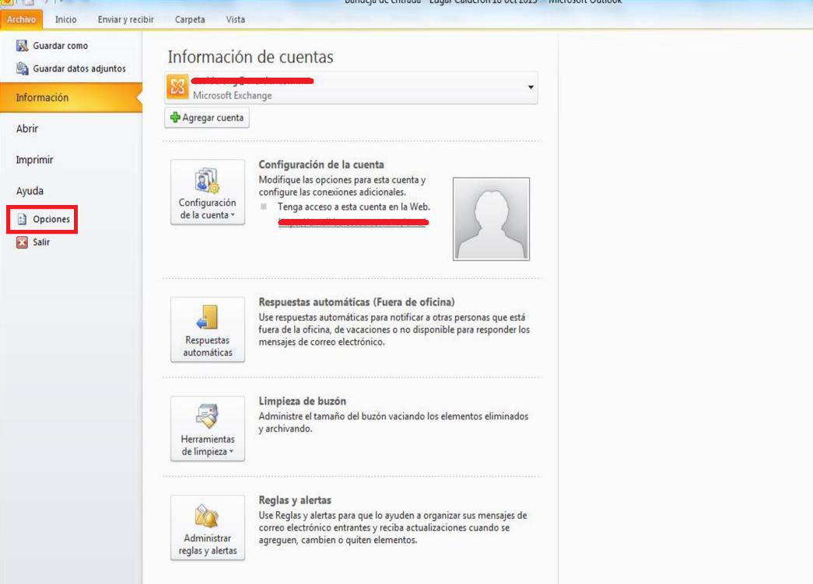
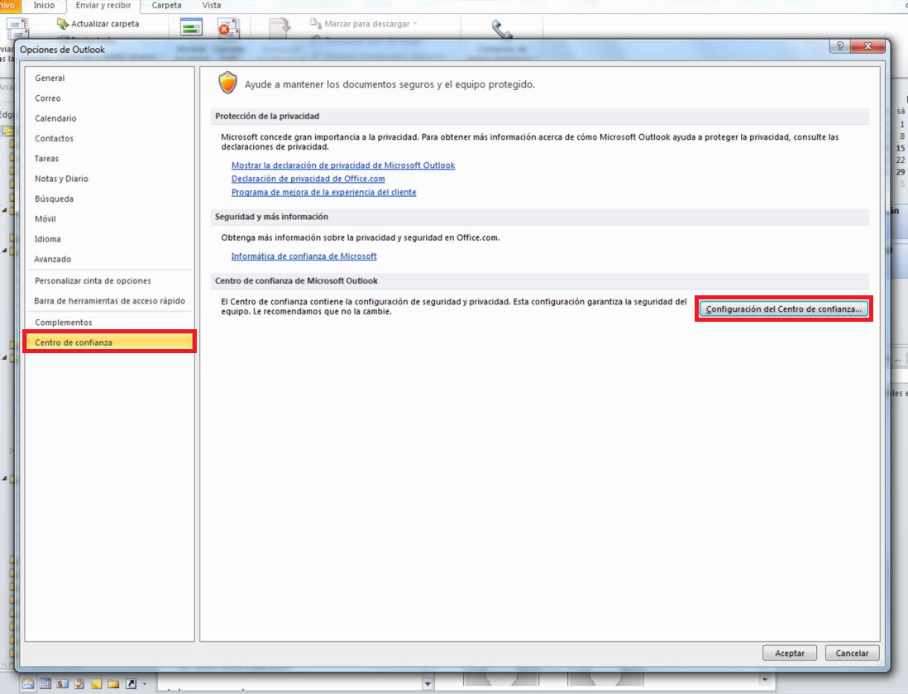
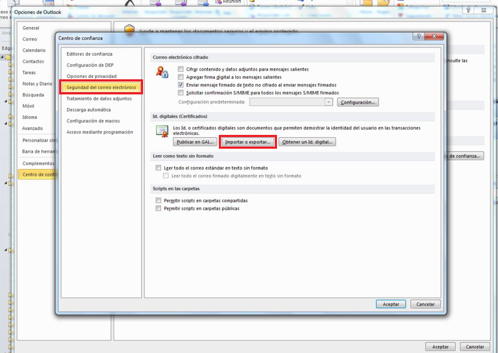
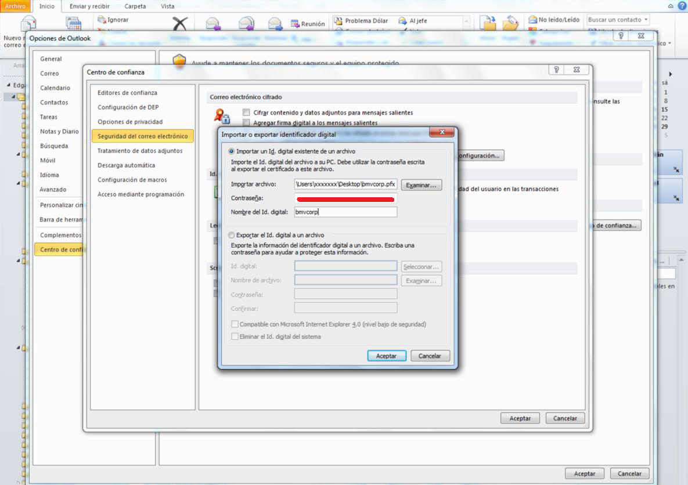

Manual de Instalación Certificado de Seguridad en Microsoft Outlook / Security Certificate Installation Manual in Microsoft Outlook
Introducción / Introduction
Descripción del procedimiento para instalar un certificado de seguridad en el correo electrónico (Microsoft Outlook) a fin de poder recibir y leer información encriptada correctamente.
Description procedure to install a security certificate in the (Microsoft Outlook) mail, to correctly receive and read the encripted information.
Prerequisitos / Pre requirements
Contar con el archivo "keystore_mcast.p12" y la contraseña asociada al certificado. En caso de no contar con el archivo y la contraseña favor de solicitarlo al equipo de Soporte Market Data.
Must have previously obtain the "keystore_mcast.p12" and password associated to the same certificate. In case you do not possess either one, please send a requirement to Market Data Support team.
Procedimiento / Procedure
- Ingresar a Microsoft Outlook.
Login to Microsoft Outlook
- Ir a Archivo y posteriormente dar click en "Opciones".
Go to "Files" and click on "Options".

- Ir a la opción "Centro de Confianza" y dar click en "Configuración del Centro de confianza".
Go to the "Trust Center" button, then click on "Trust center settings".

- Ir a la opción de "Seguridad del correo electrónico" y dar click en "Importar o Exportar".
Search for the "E-mail Security" option and click on "Import/Export".

- Dentro de "Importar o Exportar" llenar la información con base en lo siguiente:
- En "Importar archivo" dar click en el botón "Examinar" y seleccionar el archivo "keystore_mcast.p12" (este archivo debió haber sido porporcionado por el equipo de Soporte Market Data).
- En "Contraseña", introducir la contraseña proporcionada por el equipo de Soporte Market Data.
- En "Nombre del Id. digital" asignar un nombre (se propone el nombre de "bmvmcorp").
- Dar click en aceptar
Inside the "Import/Export" option fill in the information based on the following:
- Inside the "Import/Export" option, click on "Browse" and select the "keystore_mcast.p12" file (this file must have been provided to you by the Soporte Market Support team).
- In "Password", introduce the previously provided password by the Market Data Support team.
- In "Digital ID. Name", assign a name (suggested name is "bmvcorp")
- Click accept.
